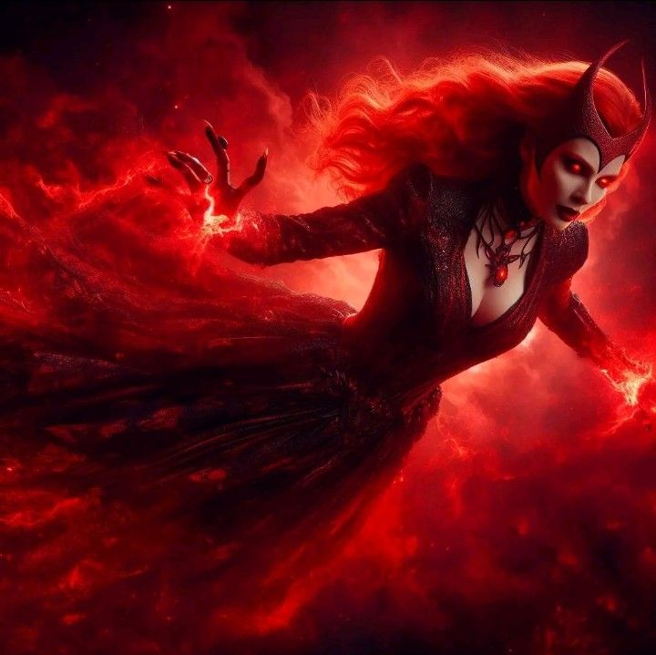
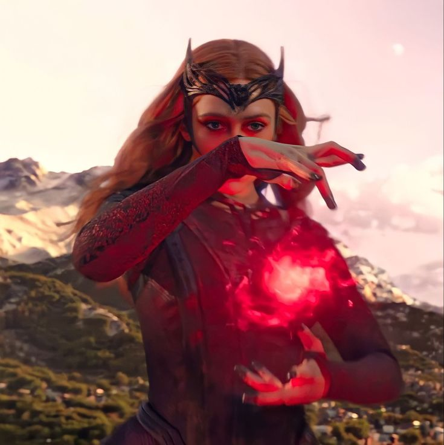

Oсновная и главная способность Ванды – управлять магией Хаоса, дана была ей Хтоном, который был заточен в Вундагоре, при её рождении. Её «заряды» не что иное, как сгустки энергии, которые разрушали возможное происхождение событий, индуцируя хаос. Её способности управляются не только сознательно, чтобы было доказано, когда даже воздействие Глаза Агамотто (Eye of Agamotto), с помощью которого Стрэндж стер все воспоминания о её силах, не возымели нужного эффекта. Даже объединенных усилий Верховного Волшебника (sorcerer Supreme) и сильнейшего телепата не хватило, чтобы остановить Ванду. Её способности позволяли ей призывать армии из ниоткуда и воскресить Чудо-Человека.
Первоначально, Ванда использовала свои силы с помощью колдовских зарядов или сфер, которые действовали в пределах её поля зрения. Их создание требовало определенной концентрации. Сначала эти заряды создавались ей неосознанно, когда Ванда производила определенный жест руками, вне зависимости от своих намерений. Эти заряды могли проявлять лишь эффект «неудачи». Позже она научилась полностью контролировать эту способность, не ограничиваясь лишь негативными эффектами.
Недавно было показано, что Ванда способна летать, хотя еще до своего психологического срыва она демонстрировала эту способность. Полные возможности до сих пор не были показаны.